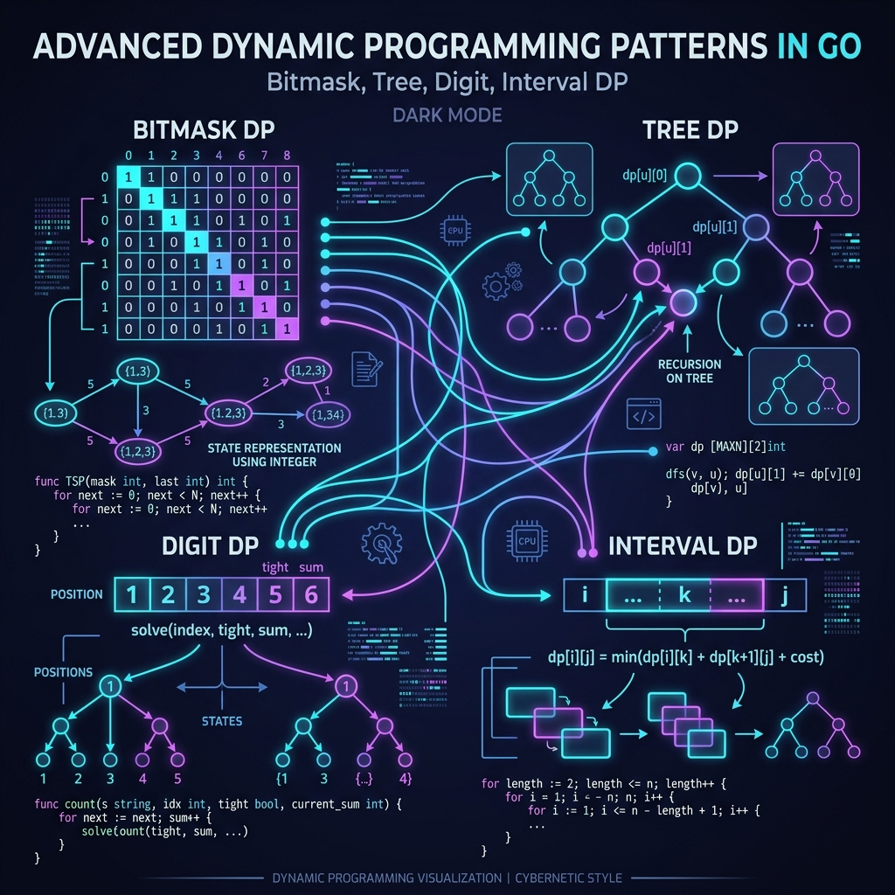
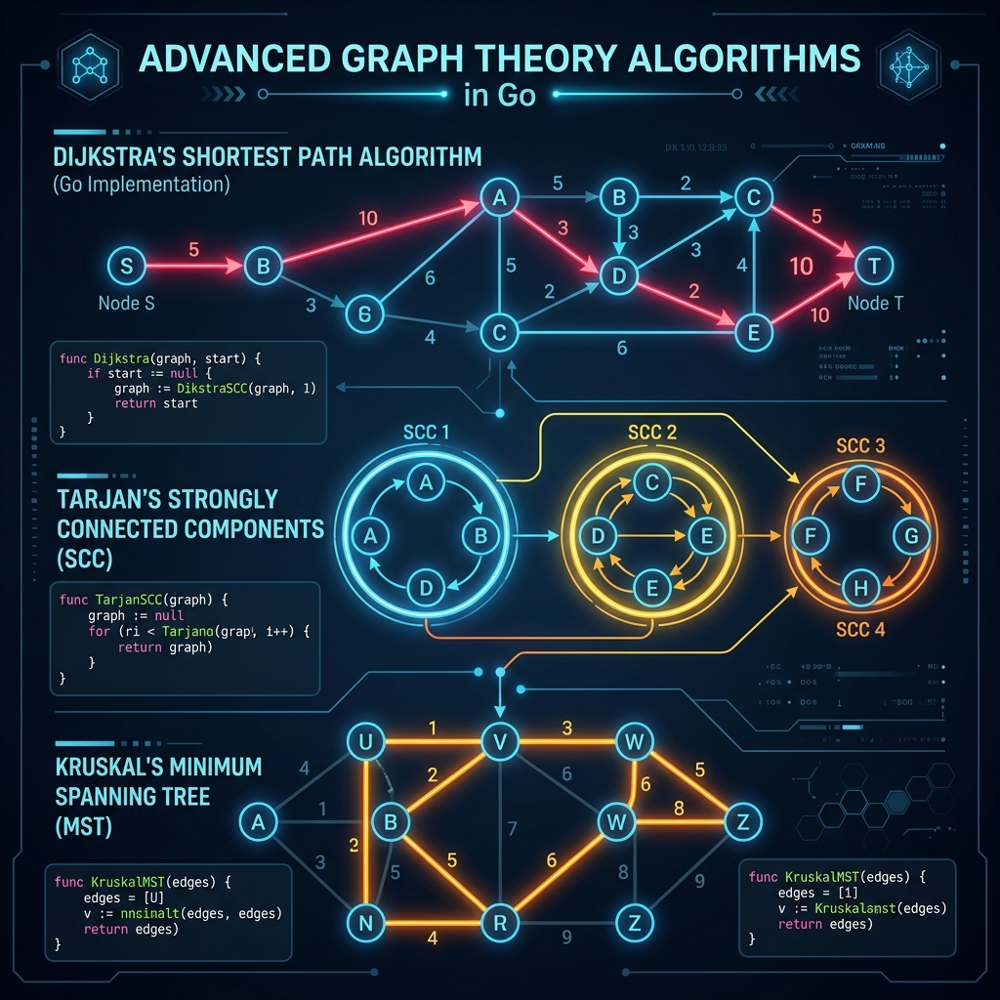
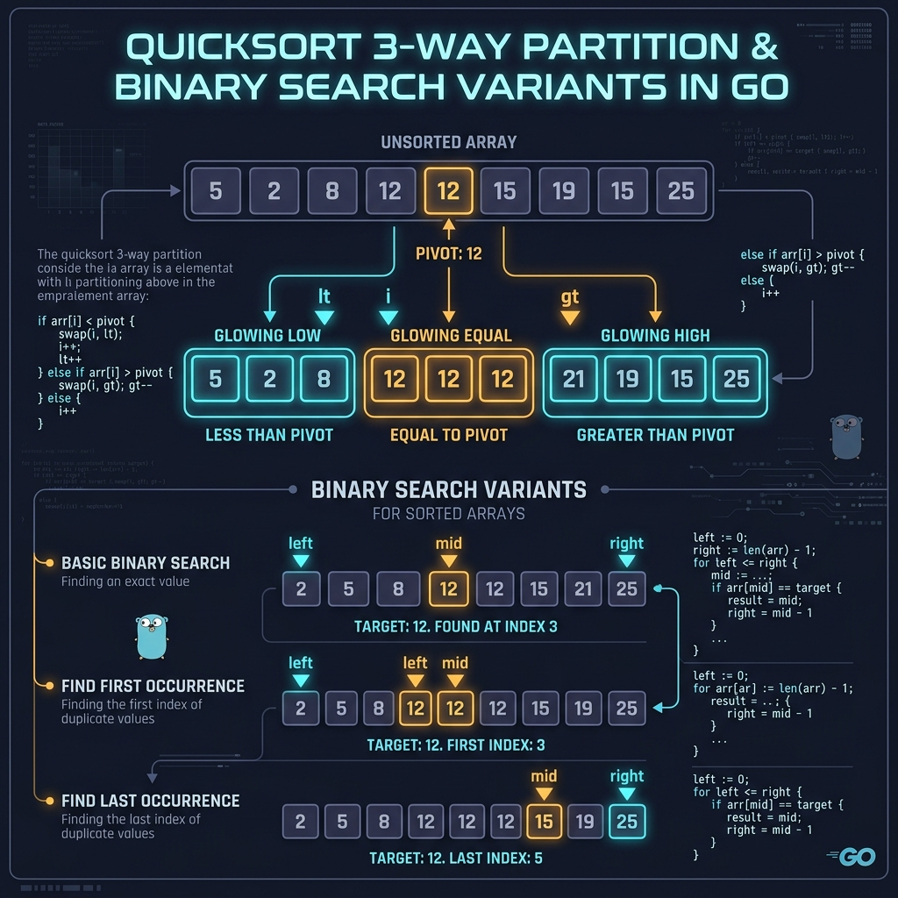
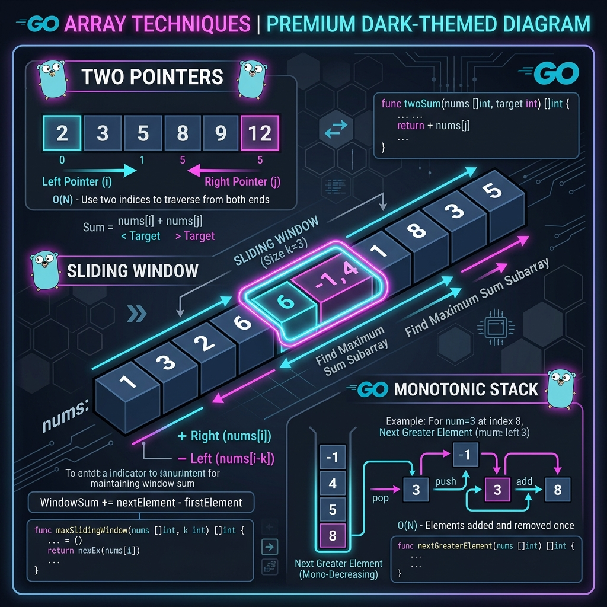
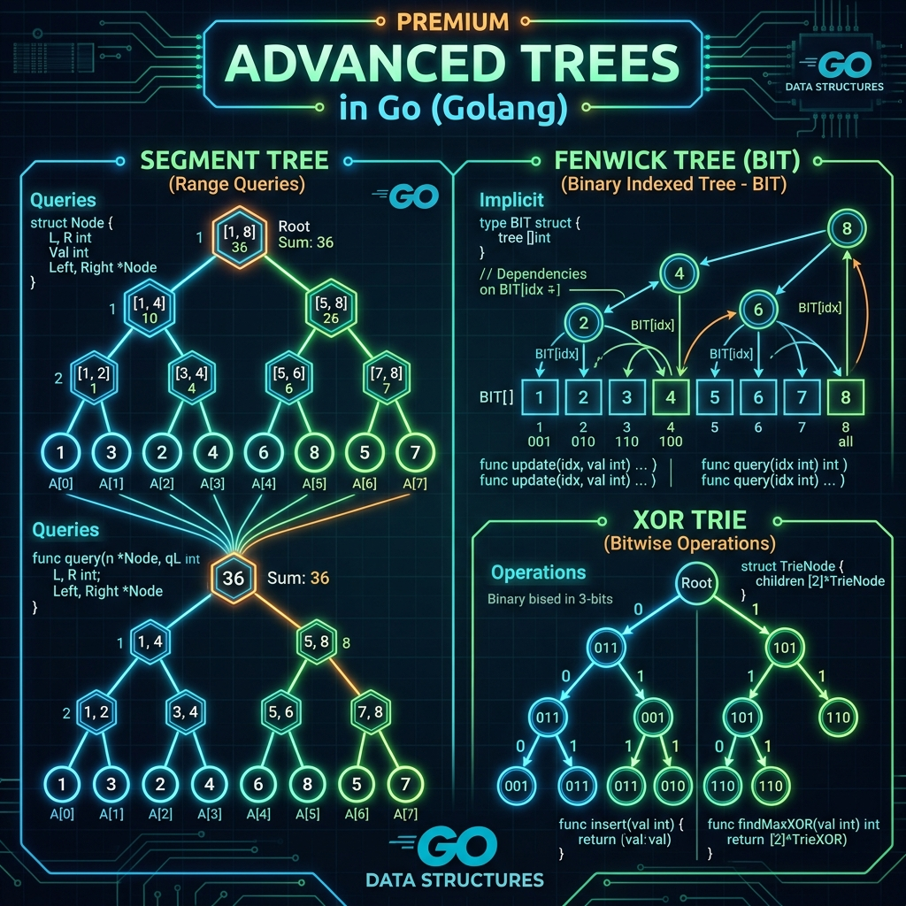
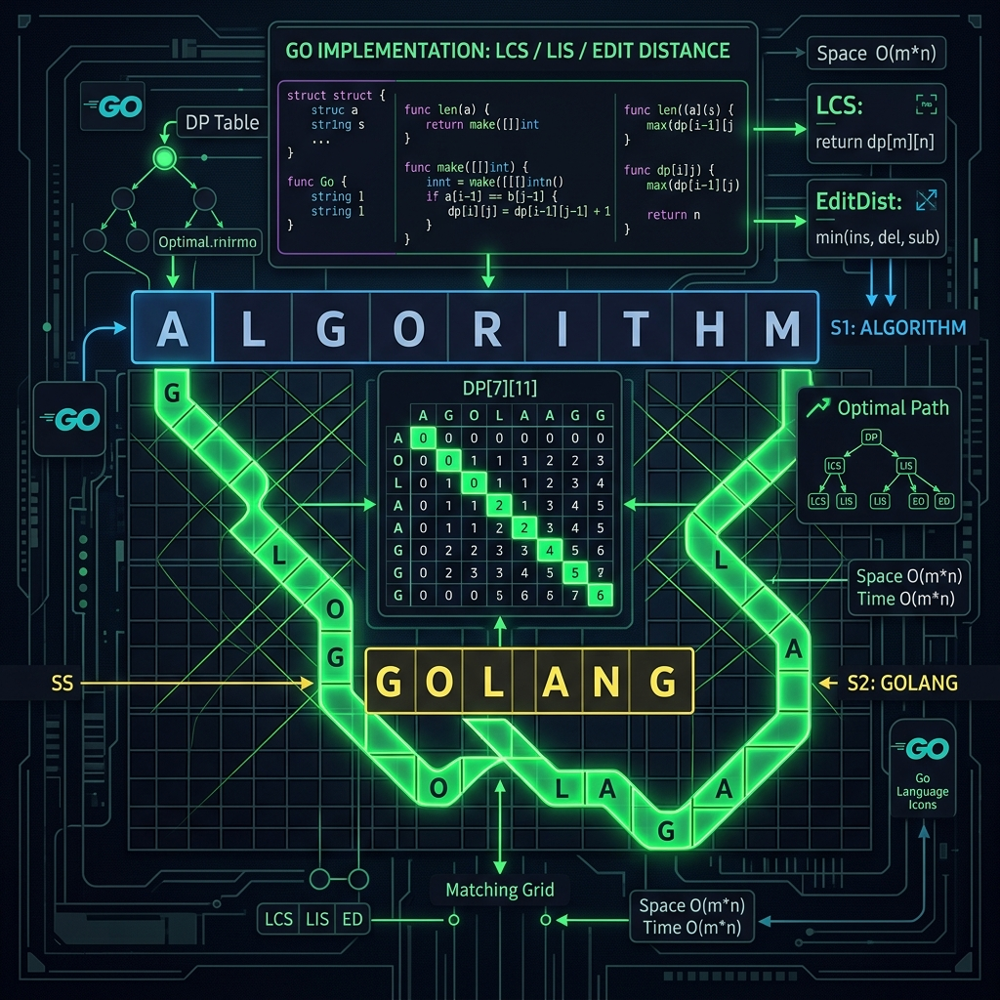

DP nâng cao mở rộng DP cơ bản bằng cách biểu diễn state phức tạp hơn. Hai điều kiện cốt lõi vẫn là Optimal Substructure và Overlapping Subproblems, nhưng state space phong phú hơn nhiều.

| Kỹ thuật | State Representation | Complexity | Use Case điển hình |
|---|---|---|---|
| Bitmask DP | dp[mask][i] | O(2ⁿ·n²) | TSP, assignment, set cover |
| Digit DP | dp[pos][tight][sum] | O(D·10·states) | Đếm số thỏa điều kiện trong [L,R] |
| Interval DP | dp[l][r] | O(n³) | Matrix chain, palindrome, burst balloons |
| Tree DP | dp[node][state] | O(n·states) | Max independent set, tree knapsack |
| DP trên DAG | dp[node] | O(V+E) | Longest path, topological DP |
🔷 Bitmask DP — TSP & Assignment Problems
Bitmask DP dùng một số nguyên để biểu diễn tập hợp các phần tử đã chọn. Bit thứ i = 1 nếu phần tử i đã thuộc tập hợp. Giới hạn thực tế: n ≤ 20.
// ③ CODE — Bitmask DP: Travelling Salesman Problem (TSP) // Tìm đường đi ngắn nhất qua n thành phố, bắt đầu và kết thúc tại city 0 // Time: O(2ⁿ × n²) Space: O(2ⁿ × n) Giới hạn thực tế: n ≤ 20 package main import ("fmt"; "math") const INF = math.MaxInt32 func tsp(dist [][]int) int { n := len(dist) fullMask := (1 << n) - 1 // dp[mask][i] = chi phí tối thiểu khi đã thăm cities trong mask, đang ở city i dp := make([][]int, 1<<n) for i := range dp { dp[i] = make([]int, n) for j := range dp[i] { dp[i][j] = INF } } dp[1][0] = 0 // Base: chỉ city 0 đã thăm (mask=1), cost=0 for mask := 1; mask <= fullMask; mask++ { for curr := 0; curr < n; curr++ { if mask&(1<<curr) == 0 || dp[mask][curr] == INF { continue } for next := 0; next < n; next++ { if mask&(1<<next) != 0 { continue } // Đã thăm rồi newMask := mask | (1 << next) cost := dp[mask][curr] + dist[curr][next] if cost < dp[newMask][next] { dp[newMask][next] = cost } } } } ans := INF for last := 1; last < n; last++ { if dp[fullMask][last] != INF { total := dp[fullMask][last] + dist[last][0] if total < ans { ans = total } } } return ans } // ===== ADVANCED: LeetCode 1125 — Smallest Sufficient Team ===== // dp[mask] = team nhỏ nhất cover đủ skills trong mask func smallestSufficientTeam(reqSkills []string, people [][]string) []int { n := len(reqSkills) skillIdx := make(map[string]int) for i, s := range reqSkills { skillIdx[s] = i } peopleMask := make([]int, len(people)) for i, skills := range people { for _, s := range skills { peopleMask[i] |= 1 << skillIdx[s] } } fullMask := (1 << n) - 1 dp := make([][]int, fullMask+1) dp[0] = []int{} for mask := 0; mask <= fullMask; mask++ { if dp[mask] == nil { continue } for i, pm := range peopleMask { nm := mask | pm if dp[nm] == nil || len(dp[nm]) > len(dp[mask])+1 { t := make([]int, len(dp[mask])+1) copy(t, dp[mask]); t[len(dp[mask])] = i; dp[nm] = t } } } return dp[fullMask] } func main() { dist := [][]int{{0,10,15,20},{10,0,35,25},{15,35,0,30},{20,25,30,0}} fmt.Println("TSP min cost:", tsp(dist)) // Output: 80 }
🔷 Digit DP — Đếm số trong khoảng [0, N]
Digit DP xử lý bài toán đếm số nguyên thỏa điều kiện trong [L, R]. Key insight: f(L,R) = f(0,R) - f(0,L-1). State = (pos, tight, extra_state).
// ③ CODE — Digit DP: đếm số trong [1,N] có digit sum chia hết cho k // Time: O(D × 10 × k) Space: O(D × 2 × k) — memoization 3D package main import "fmt" func countDivisibleDigitSum(n, k int) int { // Trích xuất digits của n từ cao xuống thấp digits := []int{} for tmp := n; tmp > 0; tmp /= 10 { digits = append([]int{tmp % 10}, digits...) } D := len(digits) // memo[pos][tightIdx][rem]: -1 = chưa tính memo := make([][][]int, D) for i := range memo { memo[i] = make([][]int, 2) for j := range memo[i] { memo[i][j] = make([]int, k) for l := range memo[i][j] { memo[i][j][l] = -1 } } } var dp func(pos, tight, rem int) int dp = func(pos, tight, rem int) int { if pos == D { if rem == 0 { return 1 }; return 0 } ti := 0; if tight { ti = 1 } if memo[pos][ti][rem] != -1 { return memo[pos][ti][rem] } limit := 9 if tight { limit = digits[pos] } // tight: chỉ được chọn tối đa digits[pos] res := 0 for d := 0; d <= limit; d++ { res += dp(pos+1, tight && d == digits[pos], (rem+d)%k) } memo[pos][ti][rem] = res return res } return dp(0, true, 0) - 1 // Trừ số 0 } // ===== EXPERT: LeetCode 233 — Number of Digit One ===== // Đếm số lần digit '1' xuất hiện trong tất cả số từ 1 đến n func countDigitOne(n int) int { digits := []int{} for tmp := n; tmp > 0; tmp /= 10 { digits = append([]int{tmp % 10}, digits...) } D := len(digits) memo := make([][][]int, D) for i := range memo { memo[i] = make([][]int, 2) for j := range memo[i] { memo[i][j] = make([]int, D+1); for l := range memo[i][j] { memo[i][j][l] = -1 } } } var dp func(pos, tight, cnt1 int) int dp = func(pos, tight, cnt1 int) int { if pos == D { return cnt1 } ti := 0; if tight { ti = 1 } if memo[pos][ti][cnt1] != -1 { return memo[pos][ti][cnt1] } lim := 9; if tight { lim = digits[pos] } res := 0 for d := 0; d <= lim; d++ { add := 0; if d == 1 { add = 1 } res += dp(pos+1, tight && d == digits[pos], cnt1+add) } memo[pos][ti][cnt1] = res return res } return dp(0, true, 0) } func main() { fmt.Println(countDivisibleDigitSum(100, 3)) // 33 fmt.Println(countDigitOne(13)) // 6 }
🔷 Interval DP — Matrix Chain & Burst Balloons
// ③ CODE — Interval DP: Matrix Chain + Burst Balloons (LC 312) // Duyệt theo chiều dài đoạn tăng dần: length=2,3,...,n // Matrix Chain: O(n³) Burst Balloons: O(n³) package main import "fmt" func matrixChain(dims []int) int { n := len(dims) - 1 dp := make([][]int, n) for i := range dp { dp[i] = make([]int, n) } for length := 2; length <= n; length++ { for l := 0; l <= n-length; l++ { r := l + length - 1 dp[l][r] = INF for k := l; k < r; k++ { // k là điểm chia cost := dp[l][k] + dp[k+1][r] + dims[l]*dims[k+1]*dims[r+1] if cost < dp[l][r] { dp[l][r] = cost } } } } return dp[0][n-1] } // maxCoins: LeetCode 312 — Burst Balloons // TRICK: k là balloon bị burst CUỐI CÙNG trong [l,r] // dp[l][r] = max coins burst hết (l+1,...,r-1), giữ l và r làm boundary func maxCoins(nums []int) int { n := len(nums) arr := make([]int, n+2) arr[0], arr[n+1] = 1, 1 // Sentinel copy(arr[1:], nums) dp := make([][]int, n+2) for i := range dp { dp[i] = make([]int, n+2) } for length := 1; length <= n; length++ { for l := 1; l <= n-length+1; l++ { r := l + length - 1 for k := l; k <= r; k++ { coins := arr[l-1]*arr[k]*arr[r+1] + dp[l][k-1] + dp[k+1][r] if coins > dp[l][r] { dp[l][r] = coins } } } } return dp[1][n] } func main() { fmt.Println(matrixChain([]int{10,30,5,60})) // 4500 fmt.Println(maxCoins([]int{3,1,5,8})) // 167 }
🔷 Tree DP — House Robber III & Tree Diameter
// ③ CODE — Tree DP: LeetCode 337 House Robber III + Tree Diameter // DFS bottom-up: tính dp từ lá lên gốc Time: O(n) Space: O(n) package main import "fmt" type TreeNode struct{ Val int; Left, Right *TreeNode } // rob: trả về (maxWithRoot, maxWithoutRoot) // Invariant: không thể chọn cả parent lẫn child func rob(root *TreeNode) int { var dfs func(*TreeNode) (int, int) dfs = func(n *TreeNode) (int, int) { if n == nil { return 0, 0 } lW, lWo := dfs(n.Left) rW, rWo := dfs(n.Right) withRoot := n.Val + lWo + rWo // Chọn node này → không được chọn children withoutRoot := max2(lW, lWo) + max2(rW, rWo) return withRoot, withoutRoot } w, wo := dfs(root) return max2(w, wo) } // treeDiameter: LeetCode 543 — dùng DFS state = max depth từ node // Tại mỗi node: diameter đi qua node = top1Depth + top2Depth func treeDiameter(edges [][]int) int { n := len(edges) + 1 adj := make([][]int, n) for _, e := range edges { adj[e[0]] = append(adj[e[0]], e[1]) adj[e[1]] = append(adj[e[1]], e[0]) } ans := 0 var dfs func(v, parent int) int dfs = func(v, parent int) int { d1, d2 := 0, 0 for _, c := range adj[v] { if c == parent { continue } d := dfs(c, v) + 1 if d > d1 { d2 = d1; d1 = d } else if d > d2 { d2 = d } } if d1+d2 > ans { ans = d1 + d2 } return d1 } dfs(0, -1) return ans } func max2(a, b int) int { if a > b { return a }; return b } func main() { root := &TreeNode{3, &TreeNode{2, nil, &TreeNode{3, nil, &TreeNode{1, nil, nil}}}, &TreeNode{3, nil, &TreeNode{1, nil, nil}}} fmt.Println(rob(root)) // 7 }
④ Pitfalls — Lỗi thường gặp Advanced DP
| Lỗi | Nguyên nhân | Cách fix |
|---|---|---|
| Bitmask overflow | Dùng int32, shift >31 bits | Dùng int64 hoặc giới hạn n≤20 |
| Digit DP: cache sai với tight | Cache cả tight=true → kết quả sai | Đưa tight vào memo key (index 0/1) |
| Interval DP: thứ tự loop sai | Tính dp[l][r] trước subproblems | Duyệt theo length tăng dần, không theo l |
| Tree DP: cycle trong undirected | DFS đi ngược về parent | Luôn truyền tham số parent và skip |
| TSP: mask=0 base case | Quên dp[1][0]=0, còn lại INF | Init toàn bộ = INF, set dp[1][0]=0 riêng |
Giới hạn thực tế: Bitmask DP với n=20 cần 2²⁰×20 ≈ 20M states. RAM: ~160MB với int. Với n=25, cần meet-in-the-middle hoặc heuristic.
Đồ thị có Directed/Undirected, Weighted/Unweighted, Cyclic/DAG. Lựa chọn sai thuật toán là lỗi phổ biến nhất trong graph problems.

| Thuật toán | Shortest Path | Negative Edge | Complexity | Dùng khi nào |
|---|---|---|---|---|
| Dijkstra | Single source | ❌ | O((V+E) log V) | Weighted, non-negative edges |
| Bellman-Ford | Single source | ✅ | O(V × E) | Negative edges, detect cycle |
| Floyd-Warshall | All pairs | ✅ | O(V³) | Dense graph, all-pairs shortest path |
| BFS | Single source | — | O(V+E) | Unweighted graph |
| 0-1 BFS | Single source | — | O(V+E) | Edges có weight 0 hoặc 1 |
// ③ CODE — Dijkstra với Min-Heap (container/heap) // Time: O((V+E) log V) Space: O(V+E) package main import ("container/heap"; "fmt"; "math") type Edge struct{ to, w int } type Item struct{ dist, node int } type MinHeap []Item func (h MinHeap) Len() int { return len(h) } func (h MinHeap) Less(i,j int) bool { return h[i].dist < h[j].dist } func (h MinHeap) Swap(i,j int) { h[i], h[j] = h[j], h[i] } func (h *MinHeap) Push(x interface{}) { *h = append(*h, x.(Item)) } func (h *MinHeap) Pop() interface{} { o:=*h; n:=len(o); x:=o[n-1]; *h=o[:n-1]; return x } func dijkstra(adj [][]Edge, src int) []int { n := len(adj) dist := make([]int, n) for i := range dist { dist[i] = math.MaxInt32 } dist[src] = 0 pq := &MinHeap{{0, src}} heap.Init(pq) for pq.Len() > 0 { cur := heap.Pop(pq).(Item) if cur.dist > dist[cur.node] { continue } // Stale entry for _, e := range adj[cur.node] { nd := dist[cur.node] + e.w if nd < dist[e.to] { dist[e.to] = nd heap.Push(pq, Item{nd, e.to}) } } } return dist } // ===== EXPERT: Bellman-Ford + Negative Cycle Detection ===== type GEdge struct{ from, to, w int } func bellmanFord(n int, edges []GEdge, src int) ([]int, bool) { dist := make([]int, n) for i := range dist { dist[i] = math.MaxInt32 } dist[src] = 0 for i := 0; i < n-1; i++ { // Relax V-1 lần updated := false for _, e := range edges { if dist[e.from] != math.MaxInt32 && dist[e.from]+e.w < dist[e.to] { dist[e.to] = dist[e.from] + e.w; updated = true } } if !updated { break } } // Lần V: vẫn update được → có negative cycle for _, e := range edges { if dist[e.from] != math.MaxInt32 && dist[e.from]+e.w < dist[e.to] { return dist, true } } return dist, false } // ===== EXPERT: Tarjan SCC — O(V+E) ===== type TarjanSCC struct{ adj [][]int idx, low []int onStack []bool stack []int timer int sccs [][]int } func newTarjan(n int, adj [][]int) *TarjanSCC { t := &TarjanSCC{adj:adj, idx:make([]int,n), low:make([]int,n), onStack:make([]bool,n)} for i := range t.idx { t.idx[i] = -1 } return t } func (t *TarjanSCC) dfs(v int) { t.idx[v]=t.timer; t.low[v]=t.timer; t.timer++ t.stack=append(t.stack,v); t.onStack[v]=true for _, u := range t.adj[v] { if t.idx[u]==-1 { t.dfs(u); if t.low[u]<t.low[v] { t.low[v]=t.low[u] } } else if t.onStack[u] && t.idx[u]<t.low[v] { t.low[v]=t.idx[u] } } if t.low[v]==t.idx[v] { scc:=[]int{} for { u:=t.stack[len(t.stack)-1]; t.stack=t.stack[:len(t.stack)-1]; t.onStack[u]=false; scc=append(scc,u); if u==v { break } } t.sccs=append(t.sccs,scc) } } func findSCCs(n int, adj [][]int) [][]int { t:=newTarjan(n,adj); for v:=0;v<n;v++ { if t.idx[v]==-1 { t.dfs(v) } }; return t.sccs } // ===== EXPERT: Kruskal MST với DSU ===== type DSU struct{ parent, rank []int } func NewDSU(n int) *DSU { p:=make([]int,n); for i:=range p{p[i]=i}; return &DSU{p,make([]int,n)} } func (d *DSU) Find(x int) int { if d.parent[x]!=x { d.parent[x]=d.Find(d.parent[x]) }; return d.parent[x] } func (d *DSU) Union(x,y int) bool { px,py:=d.Find(x),d.Find(y); if px==py { return false } if d.rank[px]<d.rank[py] { px,py=py,px }; d.parent[py]=px; if d.rank[px]==d.rank[py] { d.rank[px]++ }; return true } func kruskal(n int, edges []GEdge) int { sort.Slice(edges, func(i,j int) bool { return edges[i].w<edges[j].w }) dsu:=NewDSU(n); cost:=0; cnt:=0 for _, e := range edges { if dsu.Union(e.from,e.to) { cost+=e.w; cnt++; if cnt==n-1 { break } } } return cost } func main() { adj := [][]Edge{{{1,4},{2,2}},{{3,3}},{{3,4}},{{4,3}},{}} fmt.Println("Dijkstra:", dijkstra(adj, 0)) // [0 4 2 6 9] edges := []GEdge{{0,1,10},{0,2,6},{0,3,5},{1,3,15},{2,3,4}} fmt.Println("MST cost:", kruskal(4, edges)) // 19 adj2 := [][]int{{1},{2},{0,3},{4},{3}} fmt.Println("SCCs:", findSCCs(5, adj2)) }
④ Pitfalls — Graph Algorithms
| Lỗi | Nguyên nhân | Cách fix |
|---|---|---|
| Dijkstra + negative edge | Assume không tìm được đường ngắn hơn sau | Dùng Bellman-Ford khi có negative edges |
| Floyd-Warshall overflow | INF+INF tràn số | Kiểm tra dist[i][k] != INF/2 trước cộng |
| Dijkstra: stale entry | Push nhiều lần, process entry cũ | Check cur.dist > dist[cur.node] → continue |
| Tarjan trên undirected graph | Tất cả nodes trở thành 1 SCC | Tarjan chỉ cho directed; undirected dùng BFS/DFS thường |
| DSU không path compression | Find() O(n) worst case | Luôn dùng path compression + union by rank |
Comparison-based sort có lower bound Ω(n log n) theo Information Theory. Non-comparison sort (Counting, Radix) có thể đạt O(n) nhưng yêu cầu domain hạn chế.

| Thuật toán | Best | Average | Worst | Space | Stable |
|---|---|---|---|---|---|
| QuickSort | O(n log n) | O(n log n) | O(n²) | O(log n) | ❌ |
| MergeSort | O(n log n) | O(n log n) | O(n log n) | O(n) | ✅ |
| HeapSort | O(n log n) | O(n log n) | O(n log n) | O(1) | ❌ |
| Counting Sort | O(n+k) | O(n+k) | O(n+k) | O(k) | ✅ |
| Radix Sort | O(d·n) | O(d·n) | O(d·n) | O(n+k) | ✅ |
| TimSort (Go built-in) | O(n) | O(n log n) | O(n log n) | O(n) | ✅ |
// ③ CODE — QuickSort 3-Way + MergeSort + Binary Search biến thể + Search on Answer package main import ("fmt"; "math/rand"; "sort") // quickSort3Way: Dutch National Flag — xử lý tốt array nhiều duplicates func quickSort3Way(arr []int, lo, hi int) { if lo >= hi { return } pivIdx := lo + rand.Intn(hi-lo+1) arr[lo], arr[pivIdx] = arr[pivIdx], arr[lo] pivot := arr[lo] lt, gt, i := lo, hi, lo+1 for i <= gt { if arr[i] < pivot { arr[lt], arr[i] = arr[i], arr[lt]; lt++; i++ } else if arr[i] > pivot { arr[i], arr[gt] = arr[gt], arr[i]; gt-- } else { i++ } } quickSort3Way(arr, lo, lt-1) quickSort3Way(arr, gt+1, hi) } // mergeSort: stable, dùng khi cần count inversions hoặc stable sort func mergeSort(arr []int) []int { if len(arr) <= 1 { return arr } mid := len(arr) / 2 l, r := mergeSort(arr[:mid]), mergeSort(arr[mid:]) res := make([]int, 0, len(arr)) i, j := 0, 0 for i < len(l) && j < len(r) { if l[i] <= r[j] { res = append(res, l[i]); i++ } else { res = append(res, r[j]); j++ } } res = append(res, l[i:]...); res = append(res, r[j:]...) return res } // === BINARY SEARCH TEMPLATES === // lowerBound: index đầu tiên arr[i] >= target (C++ lower_bound) // RULE: lo=0, hi=n (open), arr[mid]<target → lo=mid+1, else → hi=mid func lowerBound(arr []int, t int) int { lo, hi := 0, len(arr) for lo < hi { mid := lo+(hi-lo)/2; if arr[mid] < t { lo=mid+1 } else { hi=mid } } return lo } // upperBound: index đầu tiên arr[i] > target (C++ upper_bound) func upperBound(arr []int, t int) int { lo, hi := 0, len(arr) for lo < hi { mid := lo+(hi-lo)/2; if arr[mid] <= t { lo=mid+1 } else { hi=mid } } return lo } // ===== EXPERT: Binary Search on Answer ===== // LeetCode 1011: Ship Packages Within D Days // TRICK: không search trên array, search trên "giá trị capacity" func shipWithinDays(weights []int, days int) int { lo, hi := 0, 0 for _, w := range weights { if w>lo { lo=w }; hi+=w } canShip := func(cap int) bool { d, cur := 1, 0 for _, w := range weights { if cur+w > cap { d++; cur=0 }; cur+=w } return d <= days } for lo < hi { mid := lo+(hi-lo)/2; if canShip(mid) { hi=mid } else { lo=mid+1 } } return lo } // ===== EXPERT: MergeSort đếm Inversions — LeetCode 315 ===== func countSmaller(nums []int) []int { n := len(nums); res := make([]int, n); idx := make([]int, n) for i := range idx { idx[i]=i } var ms func([]int) []int ms = func(ids []int) []int { if len(ids)<=1 { return ids } mid:=len(ids)/2; l,r:=ms(ids[:mid]),ms(ids[mid:]) mg:=make([]int,0,len(ids)); i,j:=0,0 for i<len(l) && j<len(r) { if nums[l[i]]<=nums[r[j]] { res[l[i]]+=j; mg=append(mg,l[i]); i++ } else { mg=append(mg,r[j]); j++ } } for ;i<len(l);i++ { res[l[i]]+=j; mg=append(mg,l[i]) } return append(mg, r[j:]...) } ms(idx); return res } // Counting Sort: O(n+k), k = value range func countingSort(arr []int, maxVal int) []int { cnt := make([]int, maxVal+1) for _, v := range arr { cnt[v]++ } for i := 1; i <= maxVal; i++ { cnt[i]+=cnt[i-1] } res := make([]int, len(arr)) for i := len(arr)-1; i >= 0; i-- { cnt[arr[i]]--; res[cnt[arr[i]]]=arr[i] } return res } func main() { arr := []int{3,5,8,1,5,9,2,7} quickSort3Way(arr, 0, len(arr)-1) fmt.Println(arr) // [1 2 3 5 5 7 8 9] a2 := []int{1,3,3,5,7} fmt.Println(lowerBound(a2,3), upperBound(a2,3)) // 1 3 fmt.Println(shipWithinDays([]int{1,2,3,4,5,6,7,8,9,10}, 5)) // 15 _ = sort.SearchInts // Built-in binary search }
④ Pitfalls
| Lỗi | Nguyên nhân | Cách fix |
|---|---|---|
| QuickSort worst O(n²) | Pivot luôn là min/max với sorted input | Random pivot hoặc median-of-three |
| Binary Search infinite loop | lo=mid khi hi=lo+1 | Chỉ dùng lo=mid+1 hoặc hi=mid; không bao giờ lo=mid |
Overflow (lo+hi)/2 | lo+hi > MaxInt khi giá trị lớn | Dùng lo + (hi-lo)/2 |
| Counting Sort: giá trị âm | Index âm panic | Shift: count[v - minVal]++ |
Các kỹ thuật này duy trì một cấu trúc bổ sung (window, stack, prefix map) và tận dụng monotone property hoặc precomputed information để tránh nested loop.

| Kỹ thuật | Pattern nhận biết | Complexity | Examples nổi bật |
|---|---|---|---|
| Two Pointers | Sorted array, pair/triple với điều kiện | O(n) | 3Sum, Container with Water |
| Sliding Window | Subarray/substring với size hoặc constraint | O(n) | Min Window Substring, Max Average |
| Monotonic Stack | Next greater/smaller element | O(n) | Largest Rectangle, Trapping Rain |
| Prefix Sum | Range sum query nhiều lần | O(1) query | Subarray Sum Equals K, 2D queries |
| Difference Array | Range update nhiều lần | O(1) update | Corporate Flight Bookings |
// ③ CODE — Two Pointers · Sliding Window · Monotonic Stack · Prefix Sum · Difference Array package main import ("fmt"; "sort") // === TWO POINTERS: 3Sum — O(n²) === func threeSum(nums []int) [][]int { sort.Ints(nums); res := [][]int{} for i := 0; i < len(nums)-2; i++ { if i>0 && nums[i]==nums[i-1] { continue } lo, hi := i+1, len(nums)-1 for lo < hi { s := nums[i]+nums[lo]+nums[hi] if s==0 { res = append(res, []int{nums[i],nums[lo],nums[hi]}) for lo<hi && nums[lo]==nums[lo+1] { lo++ } for lo<hi && nums[hi]==nums[hi-1] { hi-- } lo++; hi-- } else if s < 0 { lo++ } else { hi-- } } } return res } // === SLIDING WINDOW: Min Window Substring — O(n+m) === // LeetCode 76: substring ngắn nhất của s chứa tất cả chars của t func minWindow(s, t string) string { need := make(map[byte]int) for i := 0; i < len(t); i++ { need[t[i]]++ } have, total := 0, len(need) window := make(map[byte]int) res, resLen := [2]int{}, 1<<30 lo := 0 for hi := 0; hi < len(s); hi++ { c := s[hi]; window[c]++ if need[c]>0 && window[c]==need[c] { have++ } for have==total { if hi-lo+1<resLen { resLen=hi-lo+1; res=[2]int{lo,hi} } window[s[lo]]-- if need[s[lo]]>0 && window[s[lo]]<need[s[lo]] { have-- } lo++ } } if resLen==1<<30 { return "" } return s[res[0]:res[1]+1] } // === MONOTONIC STACK: Largest Rectangle in Histogram — O(n) === // Duy trì stack các index có height tăng dần // Pop khi gặp height nhỏ hơn → tính area func largestRectangle(heights []int) int { heights = append(heights, 0) // Sentinel flush stack stack := []int{}; maxArea := 0 for i, h := range heights { for len(stack)>0 && heights[stack[len(stack)-1]]>h { top := stack[len(stack)-1]; stack=stack[:len(stack)-1] w := i; if len(stack)>0 { w=i-stack[len(stack)-1]-1 } if a:=heights[top]*w; a>maxArea { maxArea=a } } stack=append(stack, i) } return maxArea } // === PREFIX SUM: Subarray Sum Equals K — O(n) === // TRICK: prefix[i]-prefix[j]=k → đếm prefix[j]=prefix[i]-k đã thấy trước func subarraySum(nums []int, k int) int { cnt := map[int]int{0:1}; sum, res := 0, 0 for _, v := range nums { sum+=v; res+=cnt[sum-k]; cnt[sum]++ } return res } // === DIFFERENCE ARRAY: Range Update O(1) === // LeetCode 1109: diff[l]+=v, diff[r+1]-=v → prefix sum để restore func corpFlightBookings(bookings [][]int, n int) []int { diff := make([]int, n+2) for _, b := range bookings { diff[b[0]]+=b[2]; diff[b[1]+1]-=b[2] } res := make([]int, n); cur := 0 for i := 0; i < n; i++ { cur+=diff[i+1]; res[i]=cur } return res } // === EXPERT: Trapping Rain Water — O(n) two pointers === func trap(height []int) int { lo, hi, lMax, rMax, water := 0, len(height)-1, 0, 0, 0 for lo < hi { if height[lo] < height[hi] { if height[lo] >= lMax { lMax=height[lo] } else { water+=lMax-height[lo] } lo++ } else { if height[hi] >= rMax { rMax=height[hi] } else { water+=rMax-height[hi] } hi-- } } return water } func main() { fmt.Println(largestRectangle([]int{2,1,5,6,2,3})) // 10 fmt.Println(subarraySum([]int{1,1,1}, 2)) // 2 fmt.Println(minWindow("ADOBECODEBANC","ABC")) // "BANC" fmt.Println(trap([]int{0,1,0,2,1,0,1,3,2,1,2,1})) // 6 }
④ Pitfalls
| Lỗi | Nguyên nhân | Cách fix |
|---|---|---|
| Sliding Window: shrink sai thời điểm | Shrink quá sớm, bỏ mất valid window | Chỉ shrink khi vi phạm; update ans TRƯỚC khi shrink |
| Monotonic Stack: không flush cuối | Elements còn trong stack chưa xử lý | Thêm sentinel 0 vào cuối array |
| Prefix Sum: quên init prefixCount[0]=1 | Bỏ mất subarray bắt đầu từ index 0 | cnt := map[int]int{0: 1} |
| Difference Array: index out of bound | diff[r+1] khi r=n-1 | Khai báo diff = make([]int, n+2) |
Khi cần range query + point update (hoặc ngược lại) nhiều lần trên mảng, Segment Tree và Fenwick Tree (BIT) là hai lựa chọn chính với O(log n) mỗi operation.

| Cấu trúc | Build | Query | Update | Flexibility | Dùng khi |
|---|---|---|---|---|---|
| Segment Tree | O(n) | O(log n) | O(log n) | Rất cao | Mọi range query: sum, min, max, GCD + lazy |
| Fenwick BIT | O(n) | O(log n) | O(log n) | Trung bình | Prefix sum, inversions (code gọn hơn) |
| Sparse Table | O(n log n) | O(1) | ❌ Static | Thấp | Immutable RMQ (Range Min/Max) |
| Trie | O(M·L) | O(L) | O(L) | Cao cho string | Prefix search, autocomplete, XOR max |
// ③ CODE — Segment Tree (Range Sum + Point Update) + BIT + Trie + XOR Trie package main import "fmt" // ===== SEGMENT TREE ===== // tree[1] = root, tree[2i] = left, tree[2i+1] = right // ALWAYS allocate 4*n nodes type SegTree struct{ n int; tree []int } func NewSegTree(arr []int) *SegTree { n := len(arr); st := &SegTree{n, make([]int, 4*n)} st.build(arr, 1, 0, n-1); return st } func (st *SegTree) build(arr []int, node, s, e int) { if s==e { st.tree[node]=arr[s]; return } m := (s+e)/2 st.build(arr, 2*node, s, m) st.build(arr, 2*node+1, m+1, e) st.tree[node] = st.tree[2*node] + st.tree[2*node+1] } // Update: point update tại index idx func (st *SegTree) Update(idx, val int) { st.upd(1, 0, st.n-1, idx, val) } func (st *SegTree) upd(node, s, e, idx, val int) { if s==e { st.tree[node]=val; return } m := (s+e)/2 if idx<=m { st.upd(2*node, s, m, idx, val) } else { st.upd(2*node+1, m+1, e, idx, val) } st.tree[node] = st.tree[2*node] + st.tree[2*node+1] } // Query: range sum [l, r] func (st *SegTree) Query(l, r int) int { return st.qry(1, 0, st.n-1, l, r) } func (st *SegTree) qry(node, s, e, l, r int) int { if r<s || e<l { return 0 } // No overlap if l<=s && e<=r { return st.tree[node] } // Full overlap m := (s+e)/2 return st.qry(2*node, s, m, l, r) + st.qry(2*node+1, m+1, e, l, r) } // ===== FENWICK TREE (BIT) — Binary Indexed Tree ===== // Compact, O(log n) update/prefix-sum. MUST be 1-indexed. // i & (-i) = lowbit: right-most set bit type BIT struct{ tree []int; n int } func NewBIT(n int) *BIT { return &BIT{make([]int, n+1), n} } func (b *BIT) Add(i, v int) { for ; i<=b.n; i+=i&(-i) { b.tree[i]+=v } } func (b *BIT) Sum(i int) int { s:=0; for ;i>0;i-=i&(-i) { s+=b.tree[i] }; return s } func (b *BIT) RangeSum(l, r int) int { return b.Sum(r)-b.Sum(l-1) } // ===== TRIE — Prefix Tree ===== type TrieNode struct{ ch [26]*TrieNode; end bool } type Trie struct{ root *TrieNode } func NewTrie() *Trie { return &Trie{&TrieNode{}} } func (t *Trie) Insert(w string) { n := t.root for _, c := range w { i:=c-'a'; if n.ch[i]==nil { n.ch[i]=&TrieNode{} }; n=n.ch[i] } n.end=true } func (t *Trie) Search(w string) bool { n := t.root for _, c := range w { i:=c-'a'; if n.ch[i]==nil { return false }; n=n.ch[i] } return n.end } func (t *Trie) StartsWith(p string) bool { n := t.root for _, c := range p { i:=c-'a'; if n.ch[i]==nil { return false }; n=n.ch[i] } return true } // ===== EXPERT: XOR Trie — Maximum XOR of Two Numbers ===== // LeetCode 421: Insert bits từ MSB (bit31) xuống LSB // Query: với mỗi bit, ưu tiên chọn bit đối lập (maximize XOR) type XTrie struct{ ch [2]*XTrie } func maxXOR(nums []int) int { root := &XTrie{} var ins func(*XTrie, int) ins = func(n *XTrie, num int) { for bit := 31; bit >= 0; bit-- { b := (num>>bit)&1; if n.ch[b]==nil { n.ch[b]=&XTrie{} }; n=n.ch[b] } } var qry func(*XTrie, int) int qry = func(n *XTrie, num int) int { xor := 0 for bit := 31; bit >= 0; bit-- { b := (num>>bit)&1; want := 1-b if n.ch[want]!=nil { xor|=1<<bit; n=n.ch[want] } else { n=n.ch[b] } } return xor } for _, v := range nums { ins(root, v) } ans := 0 for _, v := range nums { if x:=qry(root,v); x>ans { ans=x } } return ans } // ===== EXPERT: Sparse Table — O(1) Range Min Query ===== // Build: O(n log n) Query: O(1) với overlap-friendly ops (min, max, gcd) type SparseTable struct{ table [][]int; log2 []int } func NewSparseTable(arr []int) *SparseTable { n := len(arr); k := 1 for (1<<k) <= n { k++ } tbl := make([][]int, k) for i := range tbl { tbl[i]=make([]int,n) } copy(tbl[0], arr) for j := 1; j < k; j++ { for i := 0; i+((1<<j)-1) < n; i++ { a, b := tbl[j-1][i], tbl[j-1][i+(1<<(j-1))] if a < b { tbl[j][i]=a } else { tbl[j][i]=b } } } lg := make([]int, n+1) for i := 2; i <= n; i++ { lg[i]=lg[i/2]+1 } return &SparseTable{tbl, lg} } // RMQ O(1): [l,r] range minimum func (st *SparseTable) RMQ(l, r int) int { k := st.log2[r-l+1] a, b := st.table[k][l], st.table[k][r-(1<<k)+1] if a < b { return a }; return b } func main() { arr := []int{1,3,5,7,9,11} st := NewSegTree(arr) fmt.Println(st.Query(1,3)) // 15 (3+5+7) st.Update(1, 10) fmt.Println(st.Query(1,3)) // 22 (10+5+7) bit := NewBIT(6) for i, v := range arr { bit.Add(i+1, v) } fmt.Println(bit.RangeSum(2,4)) // 15 (3+5+7) fmt.Println(maxXOR([]int{3,10,5,25,2,8})) // 28 sp := NewSparseTable([]int{2,4,3,1,6,7,8,9,1,7}) fmt.Println(sp.RMQ(0,4)) // 1 (min of [2,4,3,1,6]) }
④ Pitfalls
| Lỗi | Nguyên nhân | Cách fix |
|---|---|---|
| SegTree: size 4n không đủ | Tree node với n không là power-of-2 cần tới 4n | Luôn dùng make([]int, 4*n) |
| BIT: 0-indexed gây lỗi | i & (-i) với i=0 → vòng lặp vô hạn | BIT bắt buộc 1-indexed: Add(i+1, v) |
| Trie: memory với Unicode | ch[26] chỉ đủ cho lowercase a-z | Dùng map[rune]*TrieNode cho Unicode |
| Sparse Table: mutable array | Sparse Table không hỗ trợ update | Dùng Segment Tree nếu cần update |
| Lazy Propagation: quên pushDown | Query vào child khi lazy chưa propagate | Gọi pushDown(node) trước khi recurse vào children |
Sequence DP giải bài toán tối ưu trên string hoặc array. State dp[i] (1 chuỗi) hoặc dp[i][j] (2 chuỗi). Key insight: rolling array giảm space từ O(mn) xuống O(n).

| Bài toán | State DP | Transition key | Complexity |
|---|---|---|---|
| LCS | dp[i][j] | match → +1; mismatch → max(left, up) | O(mn) / O(n) space |
| LIS (patience sort) | tails[] | Binary search để duy trì tails tối thiểu | O(n log n) |
| Edit Distance | dp[i][j] | match → 0; mismatch → min(ins,del,rep)+1 | O(mn) / O(n) space |
| Longest Palindrome Subseq | dp[l][r] | Interval DP: match → dp[l+1][r-1]+2 | O(n²) |
| Wildcard / Regex | dp[i][j] | '*' → dp[i-1][j] || dp[i][j-1] | O(mn) |
// ③ CODE — LCS (rolling) + LIS O(n log n) + Edit Distance + Palindrome + Wildcard package main import ("fmt"; "sort") // === LCS — Space O(n) với rolling array === func lcs(s1, s2 string) int { m, n := len(s1), len(s2) if m < n { s1, s2 = s2, s1; m, n = n, m } dp := make([]int, n+1) for i := 1; i <= m; i++ { prev := 0 // Lưu dp[i-1][j-1] for j := 1; j <= n; j++ { tmp := dp[j] if s1[i-1]==s2[j-1] { dp[j]=prev+1 } else if dp[j-1]>dp[j] { dp[j]=dp[j-1] } prev = tmp } } return dp[n] } // === LIS — O(n log n) Patience Sorting === // tails[i] = phần tử nhỏ nhất có thể kết thúc LIS dài i+1 func lis(nums []int) int { tails := []int{} for _, n := range nums { pos := sort.SearchInts(tails, n) // First tails[i] >= n if pos == len(tails) { tails = append(tails, n) } else { tails[pos]=n } } return len(tails) } // lisReconstruct: O(n²) nhưng lấy được actual subsequence func lisReconstruct(nums []int) []int { n := len(nums); dp := make([]int, n); parent := make([]int, n) for i := range dp { dp[i]=1; parent[i]=-1 } best, bestIdx := 1, 0 for i := 1; i < n; i++ { for j := 0; j < i; j++ { if nums[j]<nums[i] && dp[j]+1>dp[i] { dp[i]=dp[j]+1; parent[i]=j } } if dp[i]>best { best=dp[i]; bestIdx=i } } res := make([]int, best) for i := best-1; i >= 0; i-- { res[i]=nums[bestIdx]; bestIdx=parent[bestIdx] } return res } // === Edit Distance — Levenshtein, O(mn) time O(n) space === func editDistance(w1, w2 string) int { m, n := len(w1), len(w2) dp := make([]int, n+1) for j := range dp { dp[j]=j } for i := 1; i <= m; i++ { prev := dp[0]; dp[0]=i for j := 1; j <= n; j++ { tmp := dp[j] if w1[i-1]==w2[j-1] { dp[j]=prev } else { mn := dp[j-1]; if dp[j]<mn { mn=dp[j] }; if prev<mn { mn=prev } dp[j]=mn+1 } prev=tmp } } return dp[n] } // === Longest Palindromic Subsequence — LeetCode 516, O(n²) === // dp[l][r] = LPS trong s[l..r] // s[l]==s[r]: dp[l][r]=dp[l+1][r-1]+2 else: max(dp[l+1][r], dp[l][r-1]) func longestPalindromicSubseq(s string) int { n := len(s) dp := make([][]int, n) for i := range dp { dp[i]=make([]int,n); dp[i][i]=1 } for length := 2; length <= n; length++ { for l := 0; l <= n-length; l++ { r := l+length-1 if s[l]==s[r] { dp[l][r]=dp[l+1][r-1]+2; if length==2 { dp[l][r]=2 } } else { if dp[l+1][r]>dp[l][r-1] { dp[l][r]=dp[l+1][r] } else { dp[l][r]=dp[l][r-1] } } } } return dp[0][n-1] } // === Wildcard Matching — LeetCode 44 === // dp[i][j] = true nếu s[:i] match p[:j] // '?' match 1 char, '*' match any sequence (kể cả empty) func isMatch(s, p string) bool { m, n := len(s), len(p) dp := make([][]bool, m+1) for i := range dp { dp[i]=make([]bool, n+1) } dp[0][0] = true for j := 1; j <= n; j++ { if p[j-1]=='*' { dp[0][j]=dp[0][j-1] } } // '*' match empty for i := 1; i <= m; i++ { for j := 1; j <= n; j++ { if p[j-1]=='*' { dp[i][j]=dp[i-1][j]||dp[i][j-1] } else if p[j-1]=='?'||s[i-1]==p[j-1] { dp[i][j]=dp[i-1][j-1] } } } return dp[m][n] } // === EXPERT: Distinct Subsequences — LeetCode 115 === // dp[i][j] = số cách s[:i] contain t[:j] như một subsequence func numDistinct(s, t string) int { m, n := len(s), len(t) dp := make([]int, n+1) dp[0] = 1 // Empty t matched by any prefix of s for i := 1; i <= m; i++ { for j := n; j >= 1; j-- { // Duyệt ngược để tránh reuse if s[i-1]==t[j-1] { dp[j]+=dp[j-1] } } } return dp[n] } func main() { fmt.Println(lcs("ABCDE", "ACE")) // 3 fmt.Println(lis([]int{10,9,2,5,3,7,101,18})) // 4 fmt.Println(lisReconstruct([]int{3,1,4,2,5})) // [1 2 5] or [1 4 5] fmt.Println(editDistance("horse", "ros")) // 3 fmt.Println(longestPalindromicSubseq("bbbab")) // 4 ("bbbb") fmt.Println(isMatch("adceb", "*a*b")) // true fmt.Println(numDistinct("rabbbit", "rabbit")) // 3 }
④ Pitfalls
| Lỗi | Nguyên nhân | Cách fix |
|---|---|---|
| LCS rolling array: prev bị overwrite | Dùng dp[j] thay vì lưu tmp = dp[j] trước | Lưu prev := dp[j] trước khi update dp[j] |
| LIS: strictly vs non-strictly increasing | SearchInts cho non-strict, cần custom | Strictly: SearchInts(tails, n); Non-strictly: SearchInts(tails, n+1) |
| Palindrome DP: length=2 edge case | dp[l+1][r-1] = dp[l+1][l] sai khi l=r-1 | Xử lý riêng if length==2 { dp[l][r]=2 } |
| Wildcard: '*' không match empty | Quên init dp[0][j] cho pattern "*" | Init: if p[j-1]=='*' { dp[0][j]=dp[0][j-1] } |
| numDistinct: reuse issue | Duyệt j tăng → 1 char s[i] dùng nhiều lần | Duyệt j ngược từ n xuống 1 |
Space Optimization pattern: Hầu hết DP 2D dp[i][j] chỉ dùng row i-1 → có thể optimize xuống O(n) với rolling array. LCS, Edit Distance, Knapsack đều làm được. Palindrome DP (interval) thì không thể vì cần cả left và bottom.
🏆 GitHub Repositories
📖 Books & Courses
🔗 Tham chiếu chuyên biệt theo Topic
• AtCoder DP Contest — 26 bài DP chuẩn
• USACO Guide — DP Gold
• Codeforces: Digit DP Tutorial
• Codeforces: Bitmask DP
• CP-Algorithms: Dijkstra
• CP-Algorithms: SCC
• USACO Guide: Shortest Paths
• VisuAlgo: SSSP Visualization
• CP-Algorithms: Segment Tree
• CP-Algorithms: Fenwick BIT
• VisuAlgo: Segment Tree Viz
• Trie: Competitive Prog Book
• Go sort package — Official
• container/heap — Min/Max Heap
• Binary Search Template Guide
• VisuAlgo: Sorting Visualization
Lộ trình học đề xuất: (1) Nắm vững Array Techniques + Binary Search → (2) DP cơ bản → (3) Graph BFS/DFS → (4) Advanced Trees → (5) Advanced DP → (6) Advanced Graph. Mỗi topic làm 20-30 LeetCode problems (easy → medium → hard). Target: 150 problems trong 3 tháng theo NeetCode Roadmap.
Go-specific tips cho competitive programming: Dùng sort.Slice thay vì implement; container/heap cho priority queue; bufio.NewReader(os.Stdin) cho fast I/O; strings.Builder thay vì string concatenation. Tránh global variables — dùng closure hoặc struct methods.